Session A — Strength
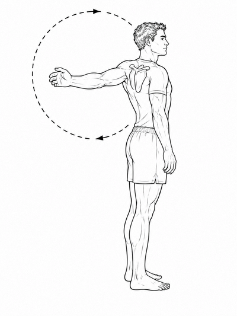
Shoulder CARs
10 slow circles each direction, each arm
Isolate the shoulder — don't let the spine rotate with it.
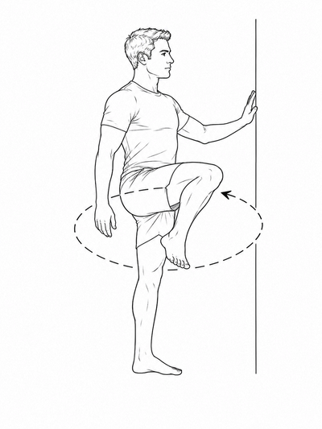
Hip CARs
10 slow circles each direction, each side
Hold something for balance. Keep the pelvis still.
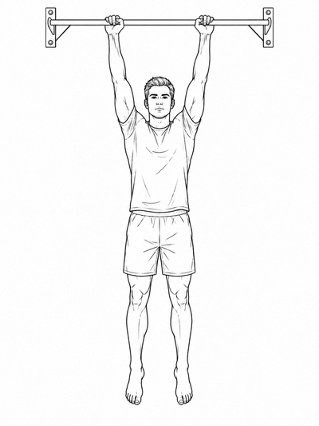
Scapular activation
Dead hang 20–30 sec
Pull shoulder blades down and together without bending the elbows.
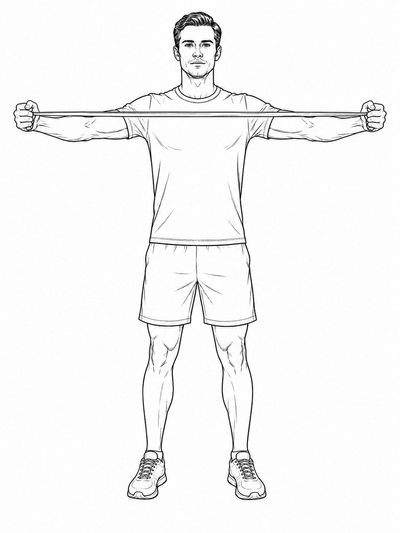
Band pull-aparts
2 × 15
Hold band at shoulder width, pull apart to a T-shape, squeeze at the back.
Dead hang accumulation
3–5 sets, rest as needed
Goal: accumulate 3–4 min total hang time. Complete fully before moving on.
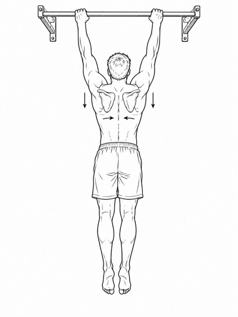
Scapular pull-ups
3 × 8–10
From dead hang, depress and retract scapulae to lift slightly. No elbow bend.
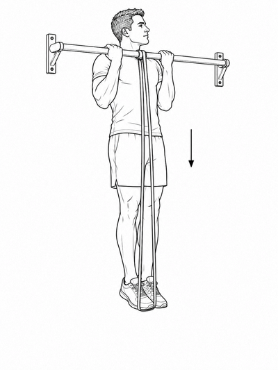
Band-assisted negatives
3 × 4–5
Jump to top, lower as slowly as possible — aim for 4–5 seconds down.
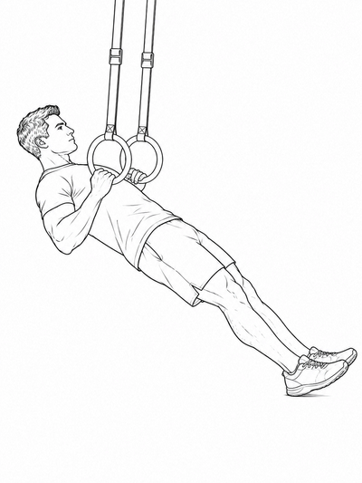
Ring rows
2 × 10–12
Feet on floor, body at angle. More horizontal = harder. Pull rings to lower chest.
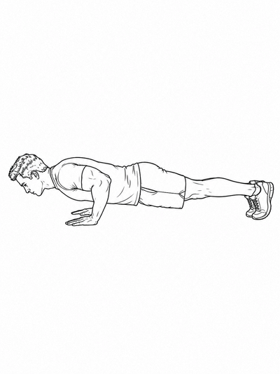
Push-up
3 × 8–12
Standard or hands elevated. Keep hollow body — posterior pelvic tilt, ribs down.
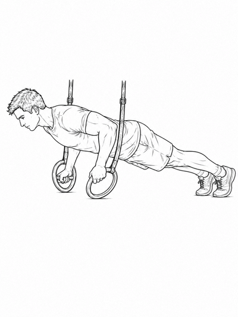
Ring push-ups
2 × 6–8 (optional)
Same but on rings. Adds instability, forces shoulder stabilisers to work.
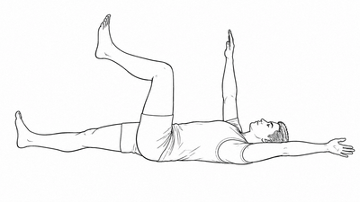
Dead bugs
3 × 8 each side
Lower back pressed flat. Lower arm + opposite leg simultaneously. No arching.
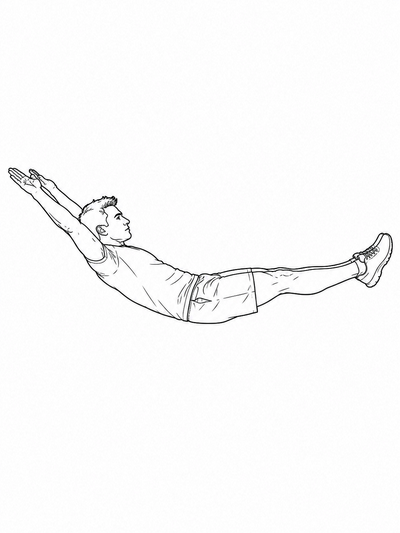
Hollow body hold
3 × 20–30 sec
Arms overhead, legs extended, lower back flat. Bend knees if too hard.
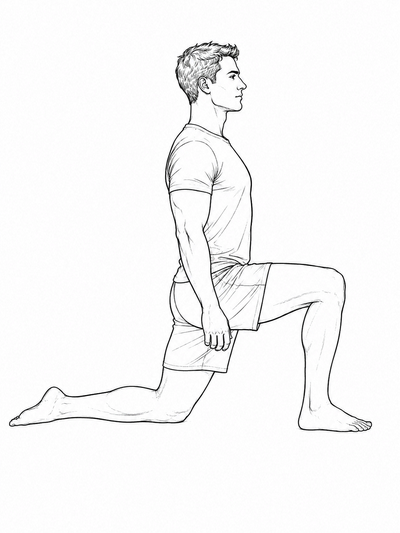
Hip flexor stretch
90 sec each side
Low lunge, back knee on floor. Tuck pelvis under before leaning forward.
Session B — Mobility
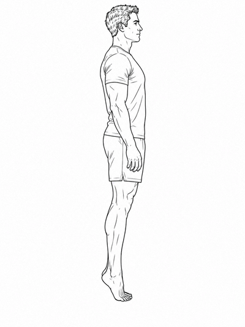
Calf raise + hold
2 × 15, slow
Raise onto toes, hold 2 sec at top. Works soleus and gastrocnemius.
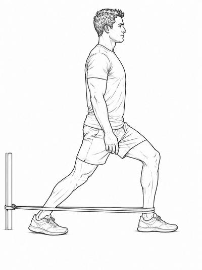
Banded ankle mobilisation
3 min each ankle
Band pulls ankle back. Drive knee forward over toes while heel stays flat. 10–15 slow drives, hold 30 sec at deepest.
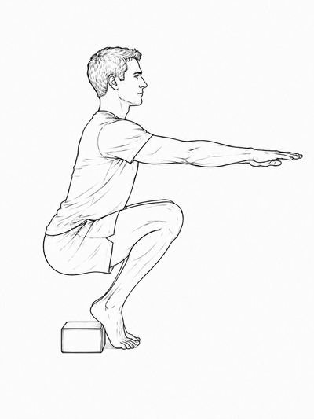
Heel-elevated squat hold
2 × 60 sec
Heels on yoga block. Goal over weeks: reduce heel elevation progressively toward flat-footed.
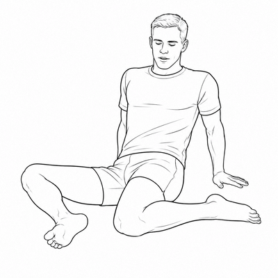
90/90 hip switches
5 min
Both legs at 90°. Rotate slowly side to side, sit bones down. Joint exploration — not a stretch.
90/90 PAILs / RAILs
5 min — front leg
Hold 2 min passive. Push shin into floor (PAILs, 10–15 sec). Pull shin up (RAILs, 10–15 sec). Settle into new range.
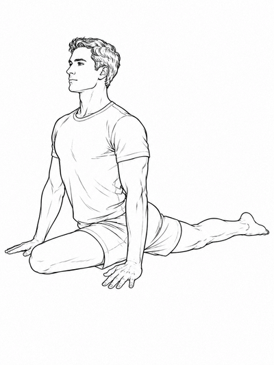
Pigeon pose
90 sec each side
Front shin parallel to mat if possible. Block under hip if needed. Breathe into the outer hip.
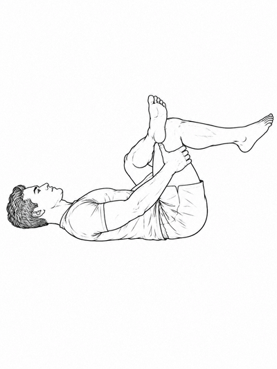
Supine figure-4
60 sec each side
Ankle over opposite knee, flex the foot, draw both legs toward chest. Gentler than pigeon.
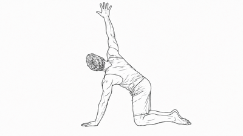
Thread-the-needle
10 each side
On hands and knees. Slide one arm under the body to rotate the thoracic spine. Hips still.
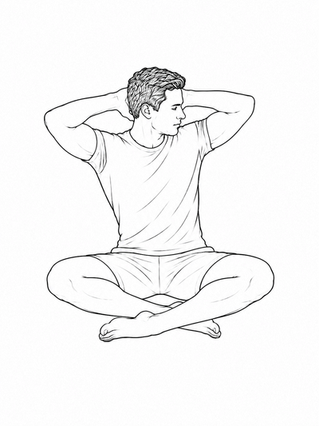
Seated thoracic rotation
10 each side
Seated cross-legged, hands behind head. Rotate from the mid-back — not the lower back.
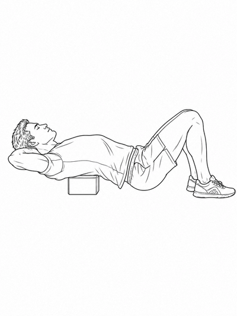
Thoracic extension over block
2 × 60 sec
Block under mid-back at shoulder blades. Arms behind head. Breathe and let gravity open the thoracic spine.
Supine figure-4
60 sec each side
Passive hold. Ujjayi breath. No effort.
Mini 1 — Hip + ankle reset
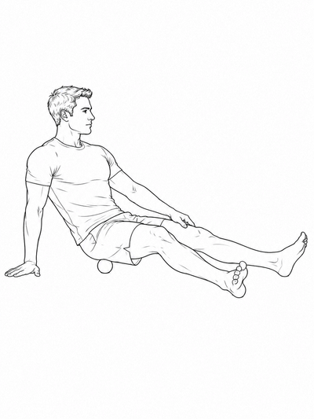
Massage ball — glute / piriformis
2 min
Find the spot that mirrors post-pickleball tightness. Sustained hold until it softens — don't roll.
90/90 hip switches
2 min
Slow and exploratory. Both sides. Keep sit bones down, don't force the range.
Hip flexor hold + breath
90 sec each side
Low lunge, back knee down. Tuck pelvis under. 5–6 Ujjayi breaths.
Banded ankle mobilisation
90 sec each ankle
Band pulls ankle back. Drive knee forward over toes. Heel stays flat.
Pigeon pose (or figure-4)
60 sec each side
Block under front hip if needed. Breathe into the outer hip. Whichever feels more needed today.
Mini 2 — Pull-up practice
Dead hang
3–5 sets, max comfortable duration
Rest 60–90 sec between. Target: 20–30 sec per set. Rebuild to where you were.
Scapular pull-ups
3 × 8
Slow and deliberate. Feel the shoulder blades move — down and together.
Band-assisted negatives
3 × 3–5
As slow as you can manage on the way down. 3 × 5 at 5+ sec each = first pull-up is close.
Mini 3 — Core activation
Dead bugs
3 × 8 each side
Lower back stays flat. Do not let it arch as the arm and leg lower.
Hollow body hold
3 × 20 sec
Progress to 30 sec when comfortable. Arms overhead, legs extended, back flat.
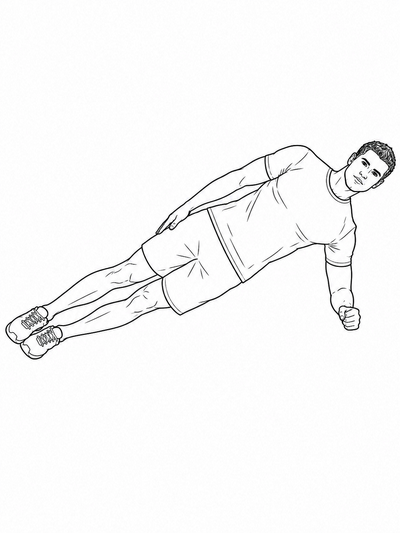
Side plank
2 × 30 sec each side
Forearm on floor, body in a straight line. Hips must not sag or pike.
Park session
Shoulder CARs + arm circles
2 min
Large slow circles, both directions. Get the shoulder joint warm.
Hip CARs + leg swings
3 min
10 circles each direction, then 10 leg swings forward/back and side to side.
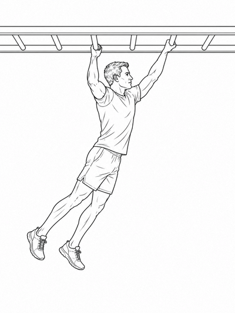
Monkey bars
2–3 traversals
Controlled shoulder engagement — not speed. Go as far as you can.
Pull-up progression
Same as Session A
Dead hang → scapular pulls → band-assisted negatives.
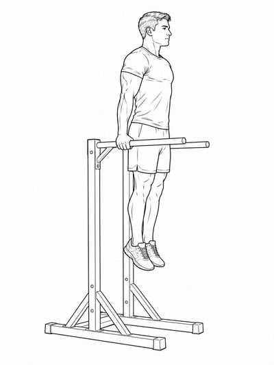
Dips
3 × 6–10
Full range. Elbows track back, chest slightly forward. Too hard: bench dips with feet on the floor.
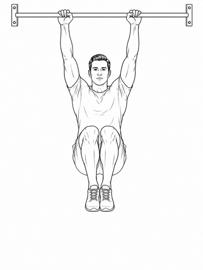
Knee raises
2 × 10–12
Hanging from the bar, draw knees to hip height with control. Core and grip combined.
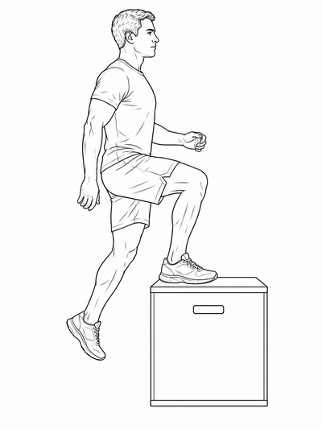
Box step-ups / jumps
3 × 5 each leg
Step-ups for single-leg stability. Low box jumps if feeling good.
Hip flexor stretch
90 sec each side
Low lunge. Tuck the pelvis, breathe into the stretch.
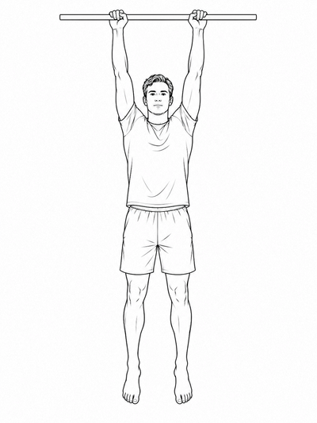
Passive hang
30 sec
Just hang. Let the spine decompress. No effort.